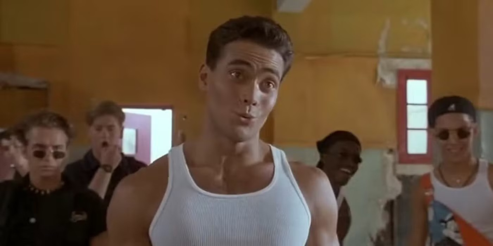
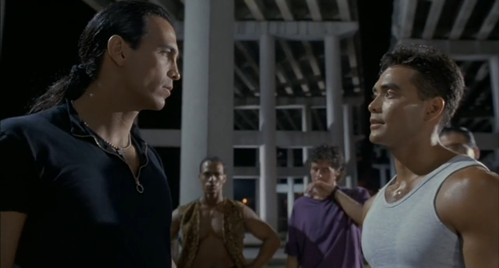
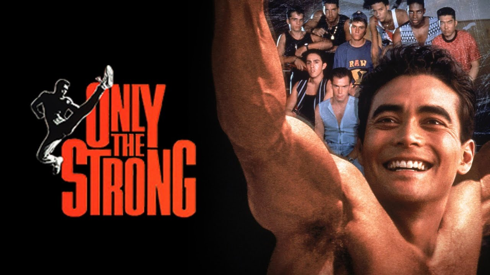

Le lundi soir, M6 diffusait des films.
Pas n'importe lesquels. Van Damme, Seagal, Lundgren, des séries B d'action qui n'avaient souvent jamais vu une salle de cinéma. Une programmation qui n'existait nulle part ailleurs à l'époque — un rendez-vous hebdomadaire pour ceux qui savaient où regarder.
C'est comme ça que j'ai découvert Only the Strong.
J'avais besoin de ce film sans le savoir. La capoeira dans un lycée de Miami, un prof qui reprend le contrôle là où le système a abandonné — quelque chose entre The Substitute et mon propre rapport aux arts martiaux.
Mark Dacascos à l'écran.
Et moi devant la télé, qui comprenait pour la première fois que la danse pouvait être un combat.
Ce soir, on rembobine le lundi soir.

Mark Dacascos — Only the Strong, Miami 1993
Only the Strong.
1993. Réalisé par Sheldon Lettich. Avec Mark Dacascos.
Un film produit par la Fox, sorti en salles aux États-Unis en août 1993. Budget modeste, distribution limitée, entrées décevantes. Disparu rapidement des cinémas américains.
En France, c'est M6 qui lui donne une seconde vie — diffusé en prime time le lundi soir, dans une programmation qui avait compris avant tout le monde que ce public-là existait et qu'il regardait.
La jaquette promettait de la capoeira, Miami, un lycée difficile.
Ce qu'on trouve à l'intérieur est plus cohérent et plus sincère que la plupart des films du genre.
Un film d'arts martiaux qui croit en ce qu'il montre. Une discipline — la capoeira — que le cinéma occidental n'avait jamais mise en valeur à ce niveau. Et Mark Dacascos dans un rôle qui lui va comme un gant — précis, fluide, habité.
Sheldon Lettich connaissait son affaire. Il avait déjà travaillé avec Van Damme sur Lionheart et Double Impact.
Avec Dacascos, il trouve quelque chose de différent.
1993.
Le film d'arts martiaux américain est en pleine effervescence. Van Damme a explosé avec Bloodsport en 1988. Seagal s'est imposé avec Nico en 1988 également. Le marché direct-to-video et les chaînes câblées consomment des dizaines de productions par an. Le public est là, fidèle, en demande.
Sheldon Lettich connaît ce territoire. Scénariste de Bloodsport, réalisateur de Lionheart et Double Impact avec Van Damme — il a contribué à construire l'esthétique du film d'arts martiaux américain des années 90.
Avec Only the Strong, il prend un pari différent.
Pas un tournoi clandestin. Pas une vengeance personnelle. Un lycée de Miami en déshérence, des élèves perdus, et un ancien militaire qui revient avec une arme inattendue — la capoeira, art martial brésilien qui mêle combat, danse et musique.
Mark Dacascos est le choix évident — et le bon. Il pratique les arts martiaux depuis l'enfance, possède une fluidité et une précision physique que peu d'acteurs de sa génération peuvent revendiquer. Et il apporte quelque chose que le genre réclamait — une légèreté naturelle, une présence qui n'a pas besoin de forcer pour convaincre.
La capoeira comme angle éditorial est un coup de génie.
Une discipline visuellement spectaculaire, musicalement riche, culturellement ancrée — exactement ce qu'il fallait pour distinguer ce film de la masse de productions similaires qui sortaient à la même époque.

Only the Strong — 20th Century Fox, 1993
Louis Stevens est un ancien béret vert.
De retour à Miami après ses années de service, il retrouve son ancien lycée — celui où il a grandi, où il a appris ce que c'était de survivre dans un quartier difficile. L'établissement est méconnaissable. Les gangs font la loi, les professeurs ont renoncé, les élèves n'ont plus aucune perspective.
Son ancien prof lui propose un marché — prendre en charge un groupe d'élèves en échec, les derniers avant l'expulsion, et tenter quelque chose.
Louis leur enseigne la capoeira.
Pas comme sport. Comme philosophie. Comme façon de se tenir dans le monde — d'occuper l'espace avec dignité, de transformer la violence en quelque chose de plus complexe.
Le film suit cette transformation. Pas de manière naïve — les gangs sont réels, la menace est concrète, et Louis va devoir affronter bien plus qu'un simple problème de discipline scolaire.
Mais c'est la capoeira qui structure tout. Ses rythmes, ses cercles, sa musique — le berimbau comme fil conducteur d'un film qui croit vraiment en ce qu'il montre.
Et Dacascos qui se bat comme quelqu'un pour qui ce n'est pas du cinéma.
Parce que ce n'en est pas.
Ce film aurait pu être une variation de plus sur la formule du professeur sauveur.
Il ne l'est pas.
Ce qui distingue Only the Strong de tous les films qui ont exploité le même territoire — de The Substitute à Dangerous Minds — c'est la capoeira elle-même. Pas comme décor, pas comme gimmick marketing. Comme système de pensée.
La capoeira est une discipline née de la résistance. Inventée par des esclaves africains au Brésil qui avaient besoin de dissimuler leur entraînement au combat dans quelque chose qui ressemblait à de la danse. Elle porte en elle une histoire de survie, d'intelligence face à l'oppression, de force qui se cache derrière la grâce.
Sheldon Lettich a compris ça. Et le film ne l'utilise pas comme prétexte à des chorégraphies spectaculaires — même si elles le sont — mais comme métaphore de ce que Louis Stevens essaie de transmettre à ses élèves. Apprendre à se battre autrement. Apprendre à occuper l'espace sans avoir à détruire ce qui est autour.
Et Dacascos incarne ça avec une évidence désarmante.
Il n'y a pas de séparation entre l'acteur et la discipline chez lui. Quand il se bat, quand il danse, quand il enseigne — c'est le même homme. Cette unité entre le corps et le personnage est ce qui rend chaque scène crédible au-delà de ce qu'un budget limité aurait normalement permis.
J'avais besoin de voir ça à l'époque.
Un homme qui transforme quelque chose de difficile en quelque chose de beau.
C'est plus rare qu'il n'y paraît.

Only the Strong — capoeira, Miami 1993
Only the Strong a raté son rendez-vous avec le public américain pour des raisons simples.
1993, le marché du film d'arts martiaux est saturé. Chaque semaine une nouvelle production, chaque mois un nouveau challenger à Van Damme ou Seagal. Le public action américain avait ses habitudes, ses références, ses acteurs fétiche. Mark Dacascos n'était pas encore un nom. La capoeira n'était pas un argument commercial reconnu.
Le film sort en salles, fait des entrées modestes, disparaît rapidement.
En France, c'est une autre histoire.
M6 et sa programmation du lundi soir créent quelque chose d'unique à cette époque — un public qui découvre ces films sans les hiérarchies du marché américain, sans les préjugés des distributeurs, sans le filtre de la critique. Un public qui regarde et qui décide par lui-même.
Only the Strong trouve ce public. Il devient un film de télévision au sens noble du terme — vu, aimé, revu. Pas au cinéma. Dans les salons, sur des écrans cathodiques, avec des familles qui n'avaient pas prévu de regarder un film sur la capoeira ce soir-là.
Mais aux États-Unis, il est oublié.
Et avec lui, une partie de ce que Mark Dacascos aurait pu devenir si Hollywood avait su lire ce qu'il avait sous les yeux.
Parce que la capoeira mérite mieux qu'une curiosité de 1993.
En 2026, les arts martiaux au cinéma ont évolué — les chorégraphies sont plus complexes, les budgets plus importants, les réalisateurs plus conscients de ce qu'ils filment. Mais quelque chose s'est perdu dans cette sophistication. La sincérité. Le sentiment que ce qu'on voit à l'écran vient de quelque part de réel, de pratiqué, de vécu.
Only the Strong a cette sincérité. Chaque séquence de capoeira est filmée avec un respect qui vient de la compréhension — pas de la mise en scène spectaculaire mais de la transmission. On voit une discipline, pas un effet spécial.
Et Dacascos mérite d'être vu dans ce rôle. C'est celui qui le définit le mieux — avant Crying Freeman, avant la reconnaissance critique, quand il était simplement un acteur qui croyait en ce qu'il faisait et qui le montrait sans retenue.
Le lycée de Miami de Only the Strong fait écho à The Substitute — le même territoire, la même question, une réponse différente. Pas la violence comme dernier recours. La beauté comme résistance.
J'avais besoin de ce film à l'époque. De voir que quelqu'un pouvait transformer un quartier difficile en quelque chose qui ressemble à de l'espoir sans que ça sonne faux.
Trente ans plus tard, ce film me fait encore vibrer.
Only the Strong n'a pas changé le cinéma d'arts martiaux.
Il n'en avait pas l'ambition.
Il voulait juste montrer quelque chose de vrai — une discipline, un quartier, un homme qui croit que la beauté peut être une arme.
Le lundi soir sur M6. J'avais besoin de films comme celui-là sans savoir exactement pourquoi. Les arts martiaux comme refuge, comme modèle, comme façon de comprendre qu'on peut être fort autrement.
Dacascos m'a montré ça.
Pas en faisant semblant. En le faisant vraiment.
Trente ans plus tard, le berimbau résonne encore. La roda tourne encore. Et ce film — discret, sincère, oublié trop vite — mérite d'être remis dans le lecteur.
On rembobine.
Titre original
Only the Strong
Pays
États-Unis
Genre
Action / Arts martiaux
Durée
99 min
Producteur
20th Century Fox
Discipline
Capoeira
Fil conducteur
Dacascos II — Saison 2
Écho
Crying Freeman (S1) · The Substitute (S1)
Regarder l'épisode
SOMEDAY — S2 EP. 03